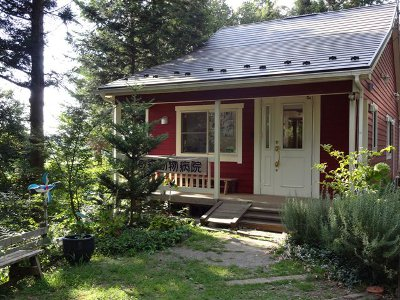

水曜 日祭日
詳しくは
診療カレンダーをご覧ください 休診日：水 日祝日

遠方よりお越しの患者さんへ
歯科治療については、基本的に、事前の診察をおこなった上で、手術治療のご予約を後日とっていただいておりますが、遠方よりお越しの患者さんについては、来院回数を減らすため、診療当日の手術も状況により受けられます。
ご予約の際、その旨、ご希望をお伝えください。
茨城県つくば市の動物病院です。
地域のペットのホームドクターとして、なんでもご相談ください。
また、犬、猫の歯科治療を行ないます。
歯周病や口内炎、歯牙の修復治療など専門的治療を致します。
ご相談ください。
休診のご案内 9/21（月）〜22（火）は祝日のため休診です。
【新型コロナ感染症予防対策のお願い】
1. 飼い主さまのみで、受付を済ませていだき、
順番が来るまで、外やお車でお待ちいただくようお願いいたします。
一組ずつ、ご案内して診察しております。
2. 予防薬、継続のお薬、療法食は先にご準備いたします。
事前にご連絡ください。
3. 来院時は、マスク着用をお願いします。
発熱、咳などの症状のある方は、ご遠慮ください。
待ち時間が長くなります。余裕をもってご来院ください。
犬猫の診療（内科 外科）
ワクチン接種
（混合・狂犬病）
避妊去勢手術
歯科治療
歯周病治療
：抜歯術
：歯周組織再生治療EMP
歯牙保存治療（破折歯）
口内炎治療
予防歯科
：はみがき指導
：歯垢歯石除去
午前 9:00-12:00
午後 15:00-18:30